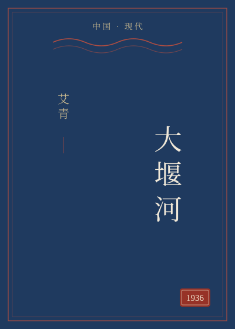
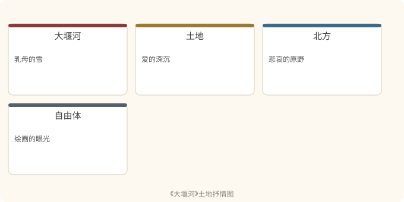

大堰河
一、基本信息
| 作者 | 艾青 |
|---|---|
| 成书/出版 | 1936年（作者页 C010 口径：大堰河（1936）、北方（1939）、向太阳（1940）） 诗咏人民的赤子诗人——走进浙江金华艾青故里（学习时报，人民网党史频道）（官方期刊） |
| 国别/地区 | 中国 |
| 时代 | 现当代 · 现代 |
| 体裁 | 诗集 |
| 语言 | 汉语（白话自由体） |

《大堰河》土地抒情图（主题·结构图）
二、创作背景
作者页（C010）：艾青 major_works 载'大堰河（1936）、北方（1939）、向太阳（1940）'（C010 作者页定位，详见 aiqing-xuan 条核对）。
同名篇（通说待核）：献给乳母'大堰河'的悼歌——'大堰河，是我的保姆'。
三、内容脉络
《大堰河——我的保姆》：乳母的一生与'雪'的意象（通说待核）。
《北方》：'北方是悲哀的'（名句通说待核）。
四、主要人物表
| 人物 | 身份 | 说明 |
|---|---|---|
| 大堰河 | 乳母 | 同名篇主角（通说待核） |
五、主题与艺术特点
- 土地与人民：'为什么我的眼里常含泪水？因为我对这土地爱得深沉'（名句通说待核——《我爱这土地》）。
- 自由体与绘画眼光（通说——艾青学画出身）。
- 忧郁的抒情（通说）。
六、影响与评论
- 作者页：艾青诗集谱系（C010 作者页口径）。
诗咏人民的赤子诗人——走进浙江金华艾青故里（学习时报，人民网党史频道）（官方期刊） - 作者页：艾青为中国现代自由体诗代表（C010 作者级定位）。
诗咏人民的赤子诗人——走进浙江金华艾青故里（学习时报，人民网党史频道）（官方期刊）
七、阅读建议
难点
- 自由体的节奏。
- 1930年代乡土背景。
- 《艾青诗选》（人民文学出版社，通说待核）。
先《大堰河》后《北方》《向太阳》。
八、待核实
- 《大堰河》1936年自费出版说核对。
- 名句出处（《我爱这土地》1938）核对。
- C010 原文细节核对。
本页主要来源
艾青的其他收录作品：艾青诗选